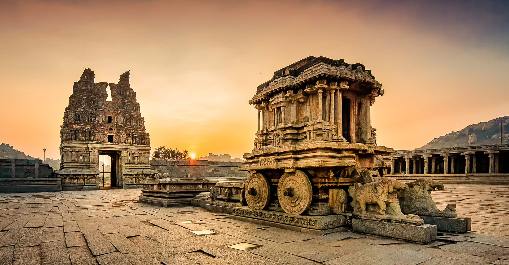

Mysore, the erstwhile capital of the Mysore Maharajas, is one of the popular destinations in Karnataka.
Go somewhereBasavakalyan Fort is considered to be one of the oldest and most imposing forts in South India.
Go somewhereSrirangapatna or Srirangapattana is a historical town in the Mandya district of Karnataka.
Go somewhereSringeri is a renowned pilgrimage center located in the Chikmagalur district of Karnataka.
Go somewhereShravanabelagola is one of the most popular Jain places of pilgrimage in Karnataka.
Go somewhereBidar is a town and district headquarters located in the north-eastern part of Karnataka.
Go somewhereTalakadu is a historical place situated on the banks of Kaveri River n Karnataka.
Go somewhereThis is some placeholder content for the custom component. It is intended to mimic what some real-world content would look like, and we're using it here to give the component a bit of body and size.
Go somewhere